Easy
C'est la difficulté la plus facile, elle permet aux nouveaux joueurs de commencer à jouer sans trop de difficultés, pour bien connaître les mécanismes du jeu.
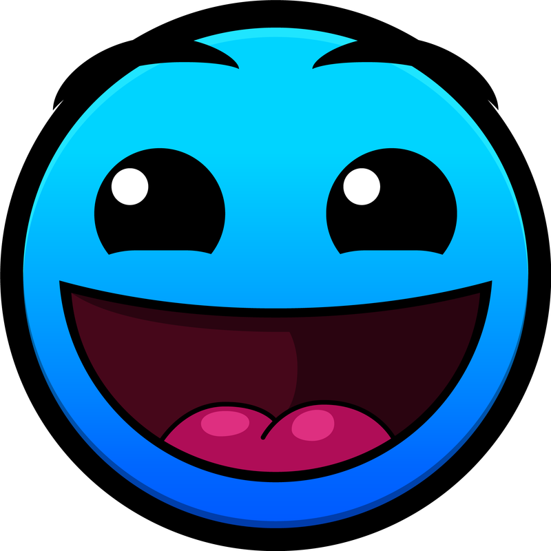
Normal
C'est une difficulté qui reste accessible tout en proposant un petit gain de difficulté.
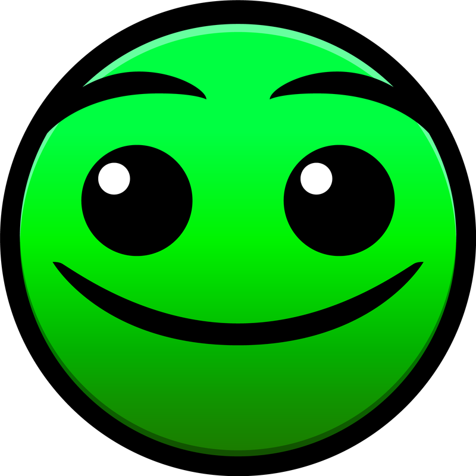
Hard
C'est la première difficulté proposant un vrai défi aux joueurs les moins expérimentés.
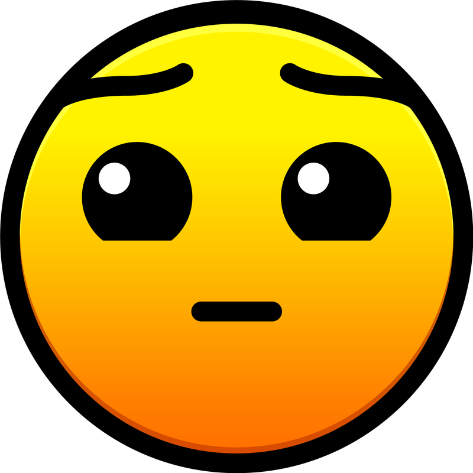
Harder
C'est une difficulté qui requiert un niveau plus élevé que pour les difficultés précédentes.
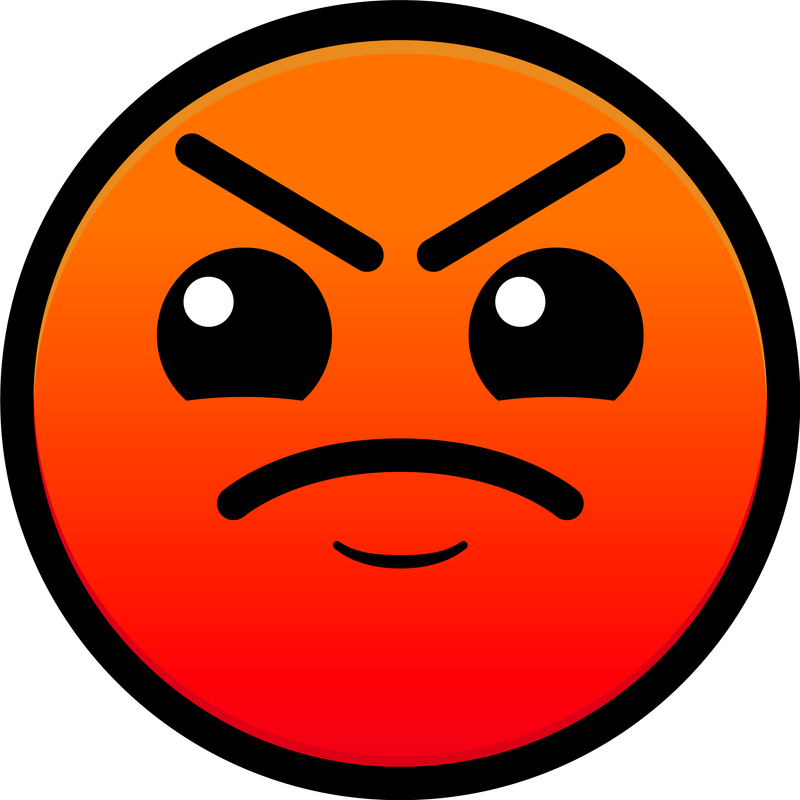
Insane
C'est la difficulté la plus populaire, elle permet de faire des niveaux difficiles sans trop de difficultés.
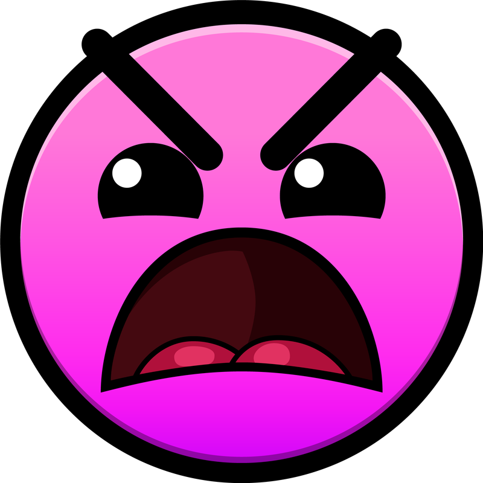
Demon
C'est la difficulté la plus difficile, elle est réservée aux joueurs les plus expérimentés et les plus talentueux.
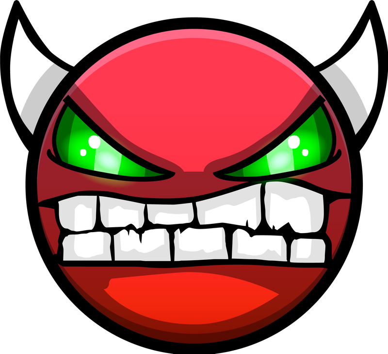
Cette difficulté est divisée en plusieurs sous-difficultés.
- Easy Demon : C'est la sous-difficulté la plus facile de la difficulté Demon ; elle est toujours accessible à la majorité des joueurs.
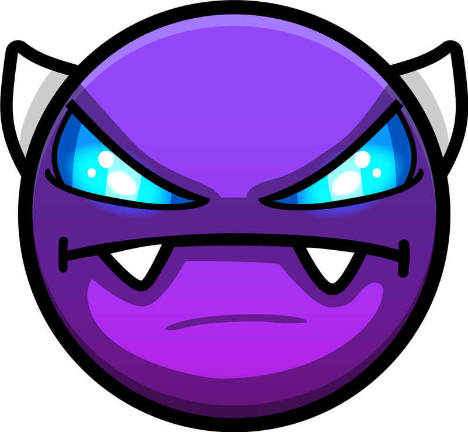
- Medium Demon : C'est la sous-difficulté la plus équilibrée entre difficulté et accessibilité.
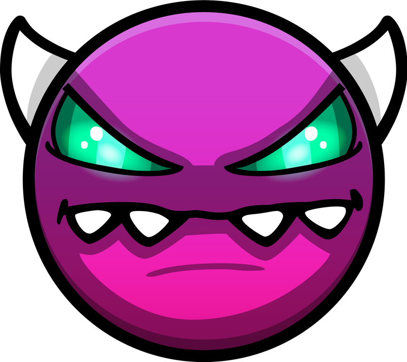
- Hard Demon : C'est la sous-difficulté la plus difficile atteignable pour les joueurs normaux.
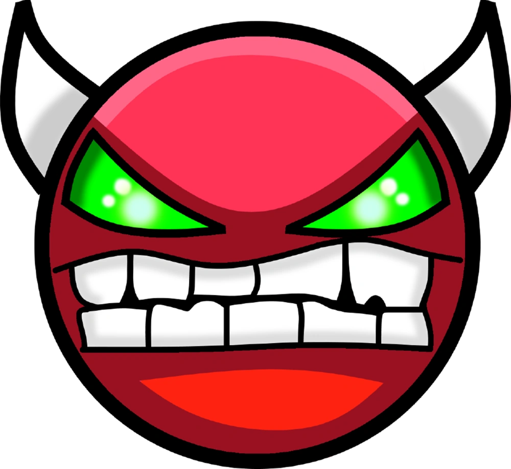
- Insane Demon : C'est la sous-difficulté des nouveaux tryharders qui cherchent le challenge ultime.
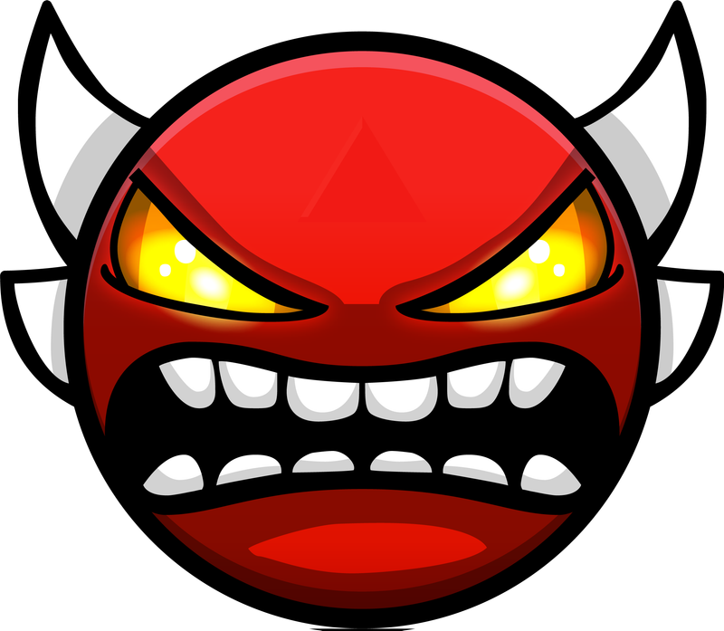
- Extreme Demon : C'est la (sous-)difficulté la plus difficile du jeu ; seule une poignée de joueurs arrive à terminer des niveaux de cette difficulté.
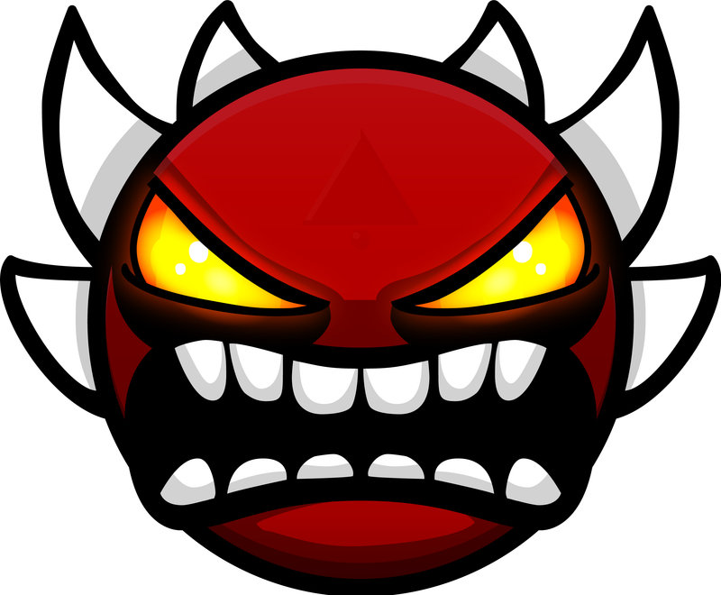
Auto
C'est une difficulté où le joueur n'a pas besoin de cliquer pour terminer le niveau, ces niveaux sont conçus pour être regardés comme un film.
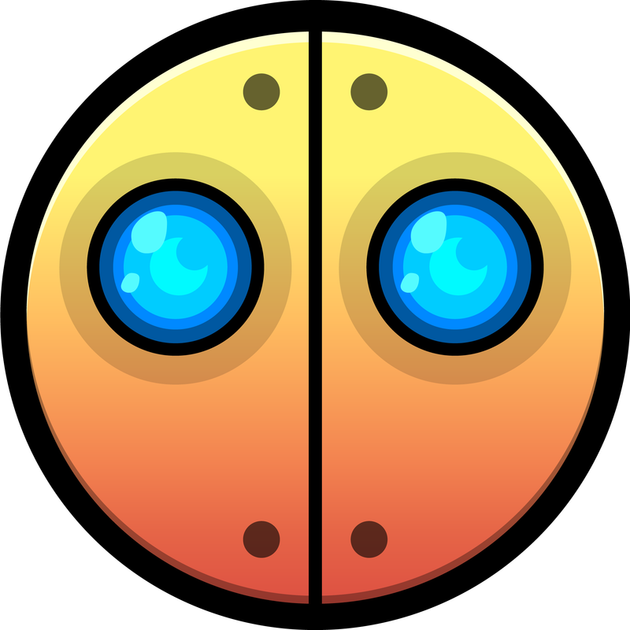
NA
C'est une difficulté pour les niveaux non évalués, c'est-à-dire ceux qui n'ont pas encore été classés par la communauté.
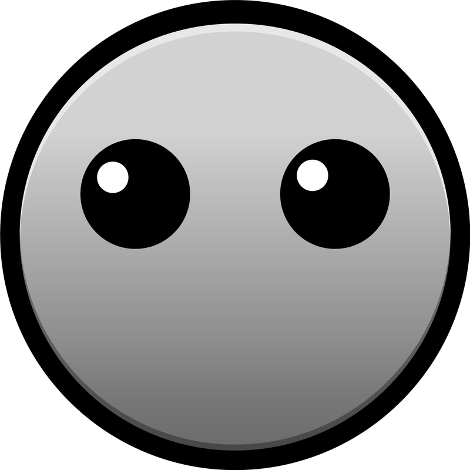
Pour en savoir plus
Autre description